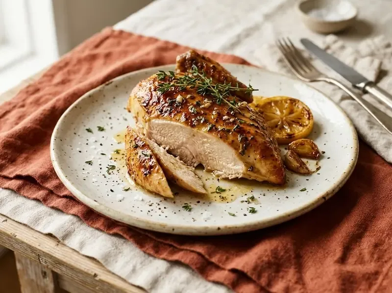
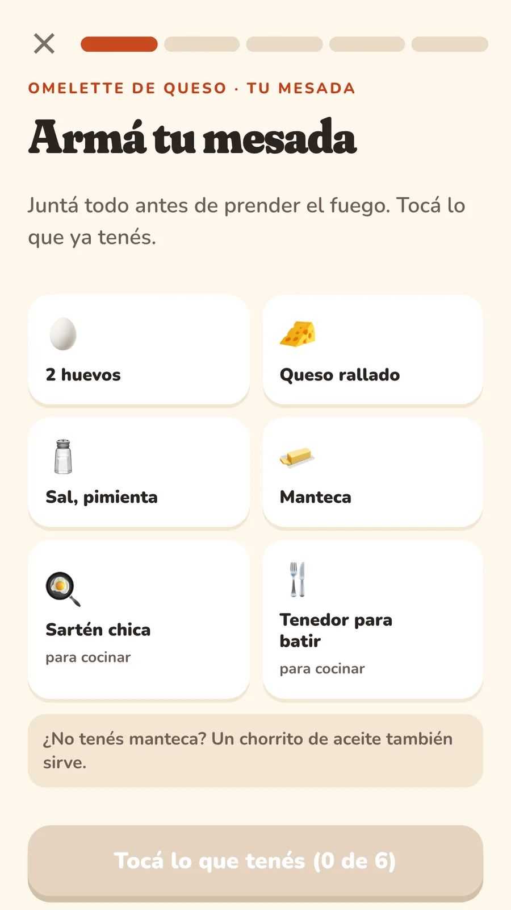

PIZCAYA
Uruguay · Installable web app and Android · Hands-free cooking mode
EdTech · Cooking
Short step-by-step lessonsVoice cooking mode
Game, recipe book and design systemHTML, CSS and JavaScript + Firebase
Browser voice · MediaPipe · AISpanish and English
Follows the browser languageLEARN TO COOK WITHOUT SMUDGING THE SCREEN: 15 HOME-STYLE DISHES IN 30 DAYS
Pizcaya teaches home-style cooking with short step-by-step lessons, with images and voice. In cooking mode the app reads each step aloud and moves on when you say "done", so you never touch your phone with messy hands.

Sauté the onion over medium heat for 10 minutes.
Stir now and then so it doesn't stick. When it turns translucent, say "done".
"Done"
- check_box 1 onion Peeled
- check_box Oil At hand
- check_box Salt At hand
Short lessons
Record your technique

What holds back people who are just starting to cook
Touchscreens in the kitchen
Touching the screen with wet, oily or floury hands breaks your rhythm and gets the phone dirty.
Long videos
Long videos make you rewind to find the step and remember lists of steps while you're at the stove.
Nobody tells you if you got it right
Beginners can't tell if they cut it right or nailed the technique, because nobody is there watching.
Recipes for people who already know how
Many recipes assume you already know how to chop, sauté or knead. First you need to learn the technique.

Pizcaya's three pillars
Hands-free cooking mode
Big steps on screen, the app reads each one aloud and starts the timer when the step calls for it. To move on, just say "done".
Short lessons and techniques
Three paths: basic cooking, techniques and recipes. Each lesson is short and goes step by step, with images and voice. Record your technique and the app tells you how you did, without uploading the video.
A growing recipe book, plus games
Over 30 step-by-step recipes, sorted by type and ingredients. If the one you want isn't there, AI builds it for you with its lesson. Points, streaks, achievements and a weekly league keep you going.
App screens

Recipe book
Step-by-step recipes with photos, grouped by type and ingredients.

Set up your counter
Before you start, the app shows you everything you need at hand.

15 dishes in 30 days
A real dish every day, from the perfect toastie to a veggie tart.

Progress and league
Points, streaks, achievements and a weekly league to compete with other cooks.
PALQUEAR — FOOTBALL BOXES
Own project. See it and the rest of our work.
We design and build it with you, from the idea to a working app.